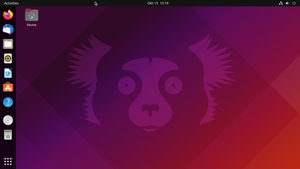
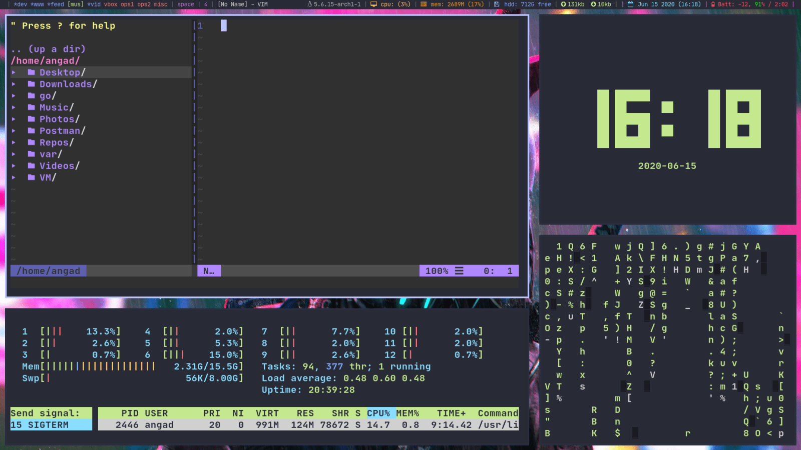
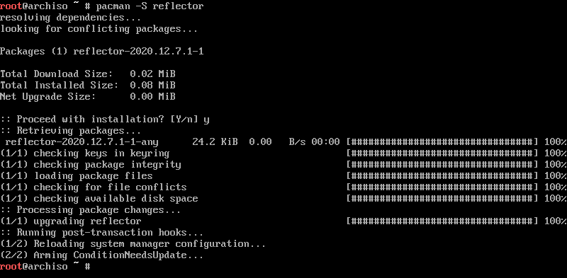
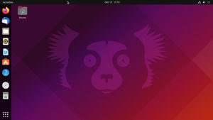
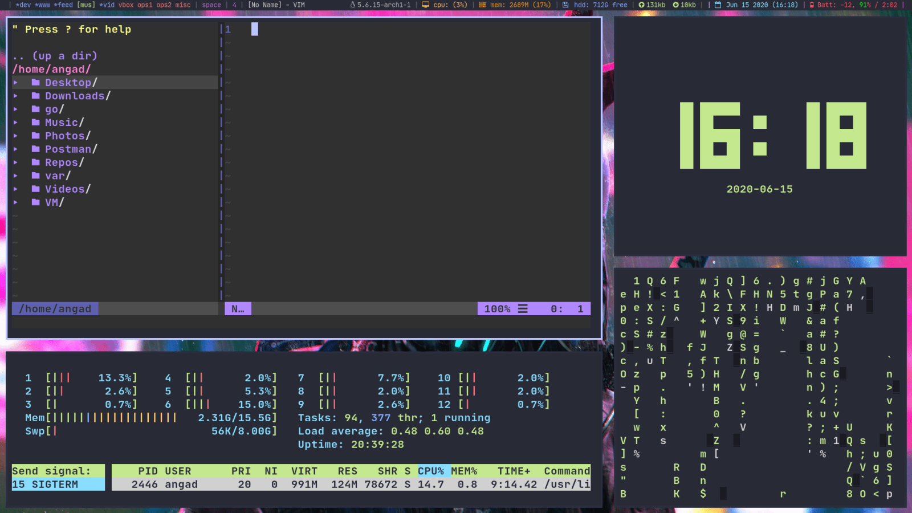
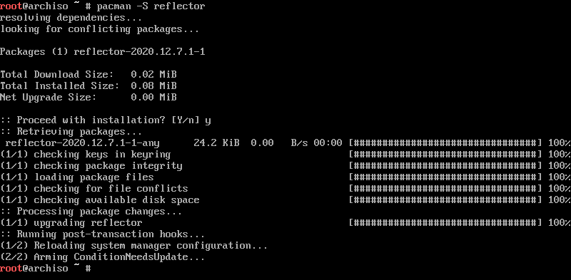

N. Linux distributions
There is a lot of software available for Linux. Even the GNU set alone, has more than 450 applications. Many people don't want all software installed at the same time. Instead of packing much software into the release, Linux has another approach. There are packages of Linux known as distributions. Distributions are Linux-based OS with a set of pre-installed packages. Some distros like Arch Linux provide bare minimum (less than 50) apps, including commands and system apps, at install time. Other more user-friendly distributions like Ubuntu, offer more than 2 thousand packages built in them. These include a graphical desktop environment, browser, basic software, etc. For beginners, I highly suggest a distro like Ubuntu or Mint. However, if you have a very old computer, I suggest Lubuntu, the lightweight version of Ubuntu.
 





Mint, Ubuntu, Arch Linux with custom installed DE, Default Arch